To perform this experiment, we first need to calibrate the pH meter. Click on the Calibrate button of the pH meter to perform the calibration operation.
Next Step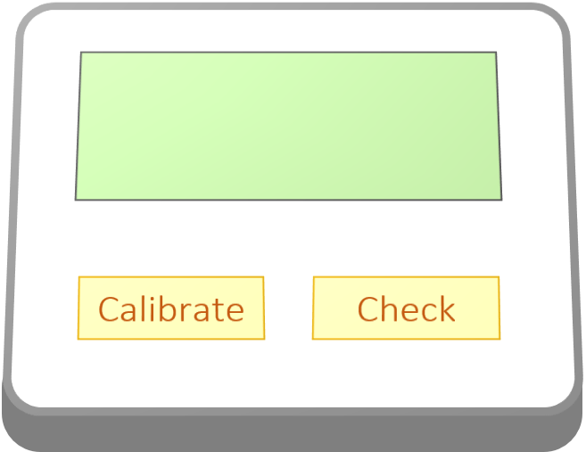 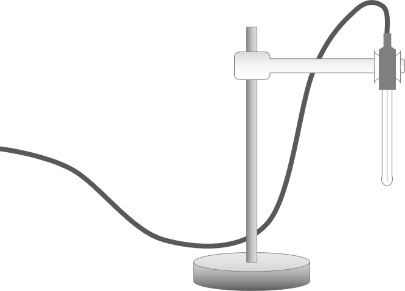 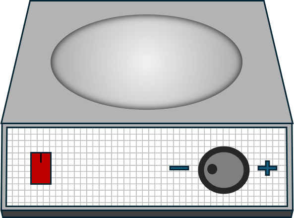 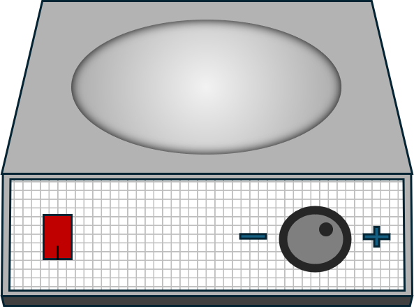 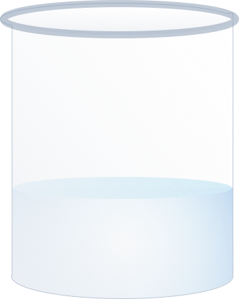 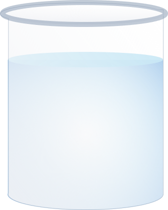 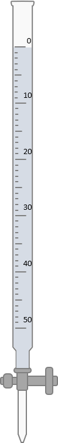 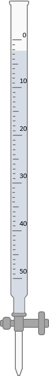 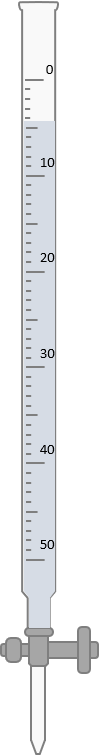 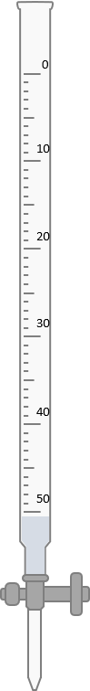 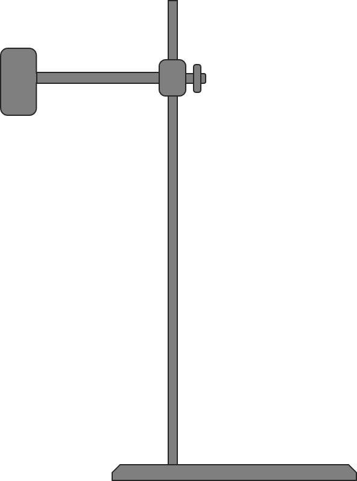 pH Meter Electrode 50ml Acetic Acid
on Magnetic Stirrers Burette containing
50 mL of NaOH.